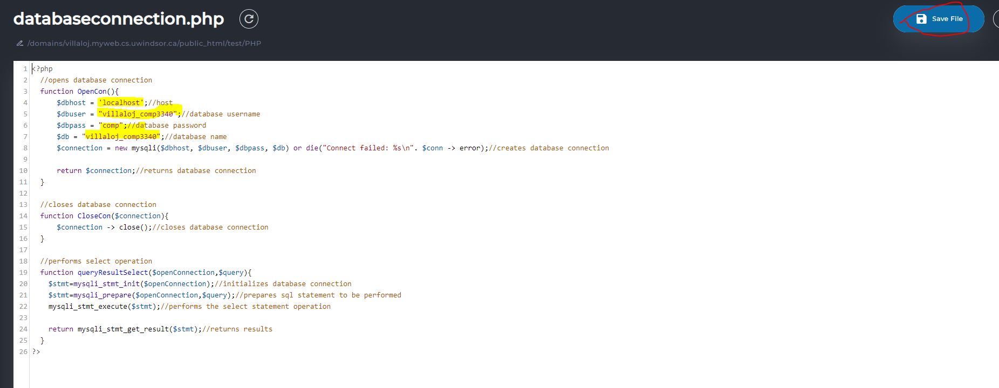

Database and Website Installation Guide
Part 1: Setting up the database
- Download project files from github from the "final" branch
- unzip file and extract contents to somewhere on your pc
- log into myweb and go to the DirectAdmin web control panel, click on databases then click create new database
- type the database credentials of your choosing: database name, user, password
- click create database, memorize the credentials
- click php MyAdmin near the top right corner of the screen
- select the database and click on the import button in the top bar
- click choose file and browse for the database sql file that was downloaded from github(db.sql)
- select the sql file and click the go button near the bottom right corner of the import screen
Part 2: Setting up the Website and connecting to Database
- the database has now been set up, you just need to import the remaining files to the public_html folder on myweb and modify databaseconnection.php
- the database credentials in the database.connection.php file need to match the credentials of the database you created earlier

Conclusion
You are all set! Everything should be properly installed now. You can go to the site via x/y/PHP/home/index.php
Where x = your myweb site link and y = the folder you stored the project files in
i.e. https://villaloj.myweb.cs.uwindsor.ca/test/PHP/home/index.php